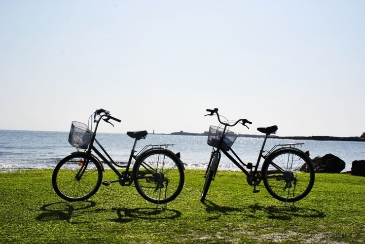

Admission to "Gwanghwamun" is free for children six years old or younger, seniors aged 65 or older, those wearing hanbok (traditional Korean clothing), and on the last Wednesday of every month.

The DMZ tour: Imjingak gondola offers a 2000 won discount from 9 am to 11 am. Admission is free for children under 36 months, and those over 65 can receive a 3000 won discount with valid ID.

Admission to Doggung Palace and Wolji Pond is free for holders of a Handicapped Person Registration Card and those aged 65 years or older. Additionally, visitors can park for free."
Discount information for electric bicycles in Udo is available on Naver Shopping Reservation. Here's how to book: 1. Click on [선택 1] to choose the date. 2. Click on [선택 2] to select the bicycle of your choice. The first option is an electric bicycle for one person, the second is an electric bicycle for two people, and the third is a regular bicycle. 3. Click on "구매하기" to proceed to checkout.